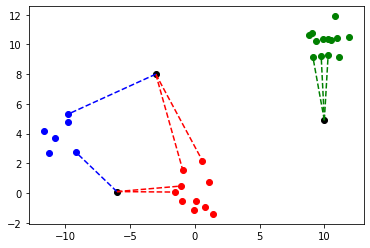

Today I decided to start my #66DaysOfData. I will share a short recap of what I learned every day for the next 66 (and hopefully more) days here on my website. I actually do not think that many people will ever read this, but sharing is part of the journey, and I think knowing that this information is out there will keep me motivated.
Dec 15, 2021
I decided to start my journey of 66 days of data with a online Machine Learning course on Udemy. It's a 20 hour course that covers the basic ML topics. I went with this course because instead of simply using models from sklearn, tensorflow, etc., all the algorithms used are implemented by ourselves. I think this will give me a much better basis for understanding. With the course I will probably spend the first 15-20 days before I decide how to proceed.
The course started with some basic Python which I mostly skipped. Then followed a short introduction on ML and it's categories: Supervised Lerning, Unsupervised Learning, Reinforcement Learing. And a few ML terms were introduced.
We then went to took a closer look into the supervised Learing. The concepts of regression and classification were disscussed and distinguish.
As I was still motivated on this first day, I went on and finished the first real section in the course, which was on the K-Nearest Neighbors algorithm. My implementation of is up on GitHub. Here is a result picture of a prediction of three points:
Dec 16, 2021
I continued with my course. Today's lesson was again about the KNN, but this time the sklearn implementation was used. The goal was to become familiar with the KNN together with the iris dataset. Below is a visualization that uses color contouring to color the regions in the plot according to the iris type to which the classifier would assign a data point at that location. The dots are the training data, the 'x's show test data points. The color of a dot represents the actual class in each case.
Dec 17, 2021
Todays first lesson was about some math background that is required for the rest of the course. That included some multivariable calculus and some linear algebra basics.
I also started with the next lesson wich is about linear regression. We startet with the difference between regressino and classification and looked into tehlinear regression from an intuitive point of view. I left the implementation for tomorrow.
For inquiries or messages of any kind you can send me a mail or contact me via LinkedIn. I will be happy to hear from you.
Frankfurt am Main
Germany
anton.roesler@stud.fra-uas.de
anton.roesler98@googlemail.com.com